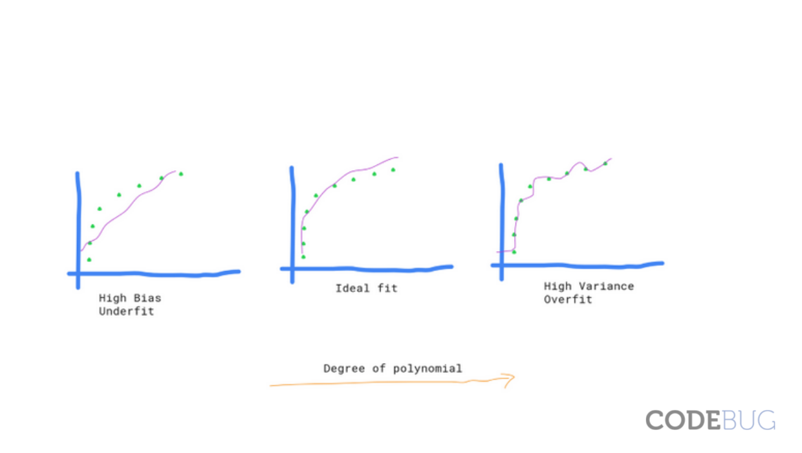

Let me start with an example. Suppose you have built a ML model under supervised learning which can detect faces from your family members. You simply feed all the family photos to your model. And, at the end, you would like to know how much your model learnt from your training process.

After training your model, you will find a function that maps input (image) to output labels(family members). If we represent your ML model with a function 'f',we can write this process as:
y = f(x),
where x = input (your family photos)
y = output (model prediction) (predictiong whether the photo is your father, mother or sister)
Suppose, you use 50 images for your training process and use the same images to see whether the model can predict the label correctly or not. If you found that 10 out of 50 images are not predicted well, you can say : 20% training error.
If you think about the intuition behind this calculation, it is saying that 'the model is not doing well with the training data itself'. That means it underfits the data. It does not want to carry all the information available in your data.
*NOTE: If your model 'f' is a linear model than it will be really hard for your model to classify the photos using linear function.
Let us consider the different scenario. You found that there is only 2% training error after training your model. And, you are happy that only 1 image out of 50 is being wrongly predicted. But, you are still suspicious about your model and apply different strategy this time. You captured new 10 photos of your family and gave it to the model. And, at this time all the 10 photos are wrongly predicted by your model.
What we can see is that 'your model learn everything from the training data without considering the generalization of data' (increased variance). We can also say that model overfits your training data. Obviously, learning everything from training data will reduce the biasness but it increases the variance in your data.